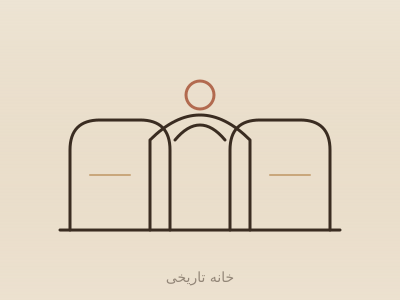
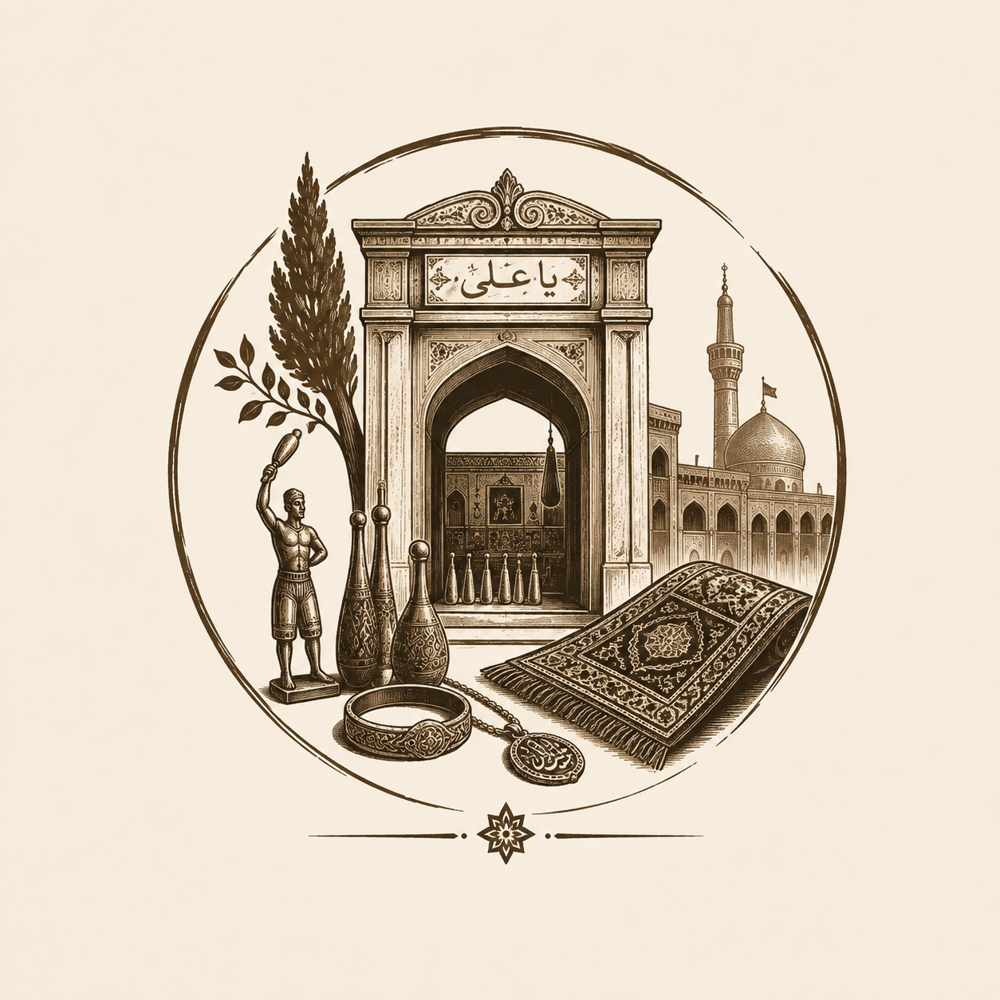

خانههای تاریخیخانه داروغه
دوره قاجار · بافت مرکزی مشهد، محله نوغان
خانه اعیانی وابسته به «داروغه» (رئیس نظمیه مشهد) با حوضخانه، تزیینات آجری و درختان کهنسال — یکی از معدود خانههای باقیمانده از بافت قدیم.
بیشتر بخوان←
خُردوگزیدهای از خانهها، زورخانهها، حمامها و بازارچههایی که هویتِ خشتیِ شهر را ساختهاند.